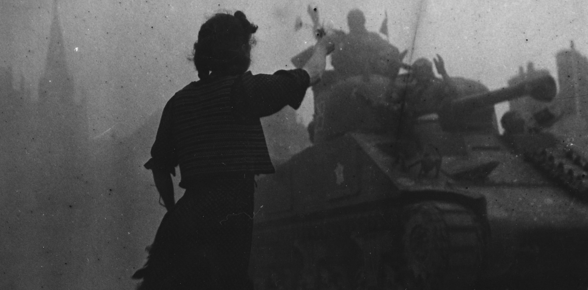

Afterword
Only three letters have been recovered due to the multiple circumstancial returns to sender. Letters unable to be delivered to the recipient and are unable to be returned to the sender are kept in the post office for a set amount of time.